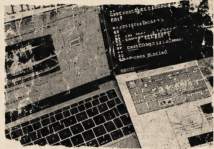
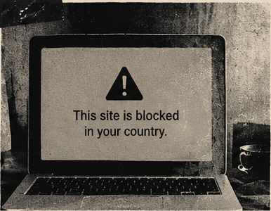

Internetcensuur: hoe werkt het?
1. Wat is internetcensuur?

Internetcensuur is het beperken of volledig blokkeren van de toegang tot websites, applicaties of bepaalde inhoud door de overheid of andere bevoegde instanties in het land waar je woont. Dit kan een negatieve invloed hebben op de vrijheid van mensen om informatie te verkrijgen en te communiceren.
Wanneer informatie wordt geblokkeerd, wordt het moeilijker om verschillende standpunten met elkaar te vergelijken. Daarom gaat internetcensuur niet alleen over technologie, maar ook over de vraag wie bepaalt welke informatie mensen kunnen lezen.
2. Hoe wordt internetcensuur toegepast?
Er zijn verschillende manieren om internetcensuur toe te passen. Dit kan bijvoorbeeld door middel van DNS-blokkades, IP-blokkades, URL-filtering of het volledig afsluiten van de internetverbinding in een bepaald gebied.
DNS-
DNS is een systeem dat opzoekt welk IP-adres bij een domeinnaam hoort. Wanneer een DNS-blokkade wordt toegepast, geeft de DNS-server het juiste IP-adres niet door aan de gebruiker. Daardoor kan de gebruiker de website niet op de normale manier bereiken.
IP-
Bij deze methode wordt de toegang tot het IP-adres van een server geblokkeerd. Als twee verschillende websites bijvoorbeeld hetzelfde IP-adres gebruiken, kan het blokkeren van dat IP-adres ervoor zorgen dat beide websites niet meer bereikbaar zijn.
URL-filtering
Bij deze methode kan de toegang tot bepaalde pagina's of internetadressen worden geblokkeerd, zonder dat de volledige website wordt afgesloten. Zo kan bijvoorbeeld een specifiek nieuwsartikel worden geblokkeerd, terwijl de andere pagina's van dezelfde nieuwswebsite bereikbaar blijven.
Internetshutdown
Bij deze methode wordt de internetverbinding in een bepaalde regio of een heel land volledig of gedeeltelijk afgesloten. Hierdoor kunnen gebruikers mogelijk geen toegang meer krijgen tot websites, sociale media en andere online diensten.
3. Waarom wordt internetcensuur toegepast?
Internetcensuur wordt meestal toegepast door overheden of bevoegde instanties, omdat bepaalde inhoud volgens hen onjuiste informatie bevat, ongepast is, illegale activiteiten ondersteunt of de bevolking zou kunnen opruien.
Daarnaast kunnen nationale veiligheid, het beschermen van de openbare orde en schendingen van auteursrechten redenen zijn om de toegang tot bepaalde websites te blokkeren.
In sommige gevallen wordt censuur ook toegepast om de verspreiding van politieke inhoud of nieuwsberichten die kritisch zijn over de overheid te beperken.

4. The Uncensored Library - Reporters Without Borders
Reporters Without Borders (RSF), in het Nederlands ook bekend als Reporters Zonder Grenzen, is een internationale non-profitorganisatie die zich inzet voor het beschermen en bevorderen van persvrijheid en vrijheid van informatie. De organisatie werd in 1985 in Frankrijk opgericht door vier journalisten.
De belangrijkste doelen van de organisatie zijn het verdedigen van de persvrijheid, het beschermen van journalisten en het bestrijden van censuur. Daarnaast publiceert RSF jaarlijks de Wereldindex voor Persvrijheid, waarin de situatie van de persvrijheid in 180 landen en gebieden wordt beoordeeld.
The Uncensored Library werd op 12 maart 2020, de Werelddag tegen Cybercensuur (World Day Against Cyber Censorship), geopend. Sindsdien functioneert het als een digitale bibliotheek die is gebouwd in het computerspel Minecraft.
Een van de voordelen van Minecraft is dat, wanneer het IP-adres van een server wordt geblokkeerd, er een nieuwe server met een ander IP-adres kan worden geopend. Op deze manier kan het mogelijk zijn om de toegang tot de bibliotheek te behouden.
In de bibliotheek zijn journalistieke artikelen te vinden die in verschillende landen worden gecensureerd, evenals informatie over persvrijheid. Van verschillende artikelen zijn zowel versies in de oorspronkelijke taal als Engelse vertalingen beschikbaar.
Meer informatie: The Uncensored Library